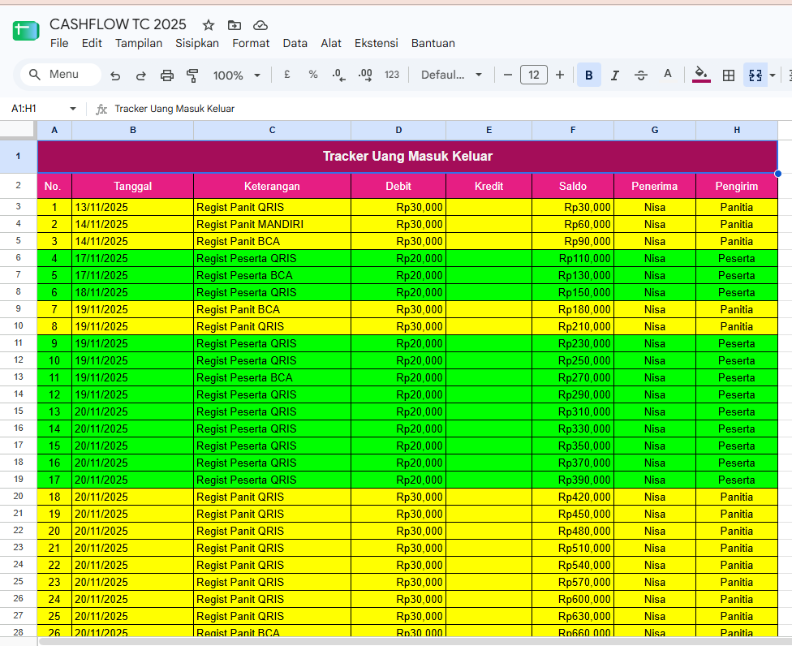
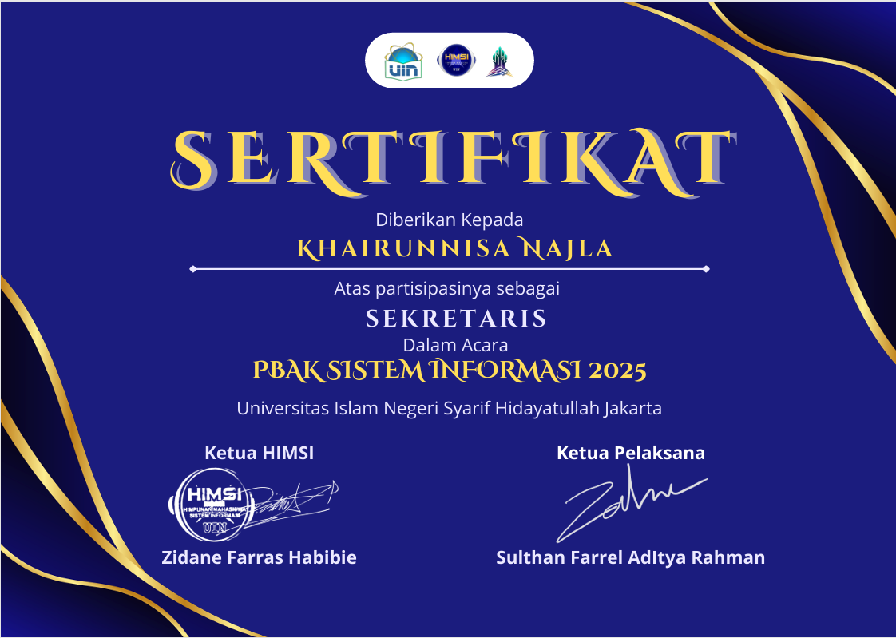
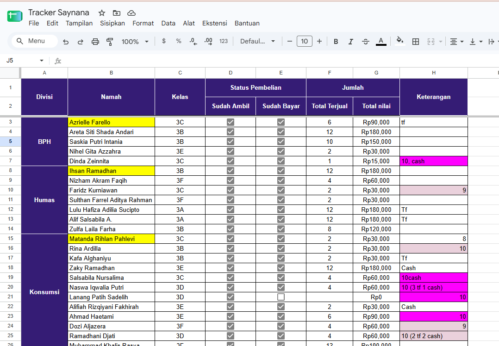
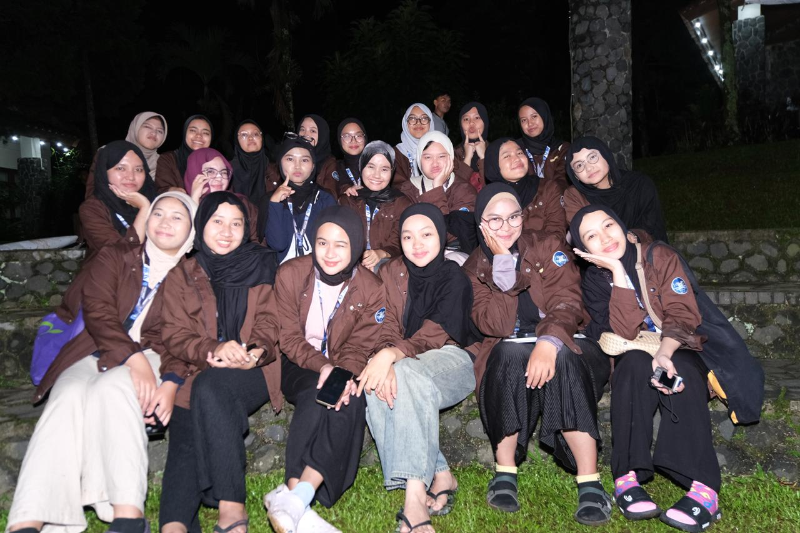

My Journey as a Staff
Before stepping into leadership, I actively built my foundation by serving in 7-10 different work programs (proker) within HIMSI. From securing sponsorships and managing treasury tasks to handling secretarial administration and event execution, these experiences sharpened my adaptability, teamwork, and operational management.
Swipe / Drag horizontally below to explore my projects ➔
Training Camp HIMSI
📍 Ciputat, Indonesia | Oct 2025 – Nov 2025
Managed the overall event budget, including tracking cash flows, allocating funds for different divisions, and ensuring total financial transparency. Collaborated with the core committee to optimize expenditures while maintaining the quality of the training camp for all participants.



PBAK Sistem Informasi
📍 Ciputat, Indonesia | Jun 2025 – Sep 2025
Spearheaded the administrative workflows for the orientation program (PBAK). Responsible for drafting official proposals, managing correspondence, and documenting meeting minutes.




Sponsorship – Meet Up
Spearheaded the B2B partnership strategy and successfully secured four key corporate sponsors within a highly tight timeframe. Entrusted with managing a sponsorship fund of approximately IDR 10,000,000. This required strategic financial planning and analytical thinking to effectively circulate and allocate the capital.
4
Corporate Sponsors
IDR 10M+
Managed Fund
B2B
Partnership Strategy




HIMSI Comparative Study 2025
📍 Ciputat, Indonesia | January 2026
As the Head of the Event Division, I spearheaded the end-to-end conceptualization and execution of the HIMSI Comparative Study 2025. I directed a dedicated team of staff and took full ownership of the event's overarching structure. My core responsibilities included developing the central theme, meticulously designing the detailed event rundown, and organizing interactive sessions such as games to maximize participant engagement. Through effective team coordination and strategic planning, I ensured a seamlessly orchestrated program that successfully facilitated meaningful connections and met all organizational objectives.


Training Camp HIMSI
📍 Ciputat, Indonesia | Oct 2025 – Nov 2025
Managed the overall event budget, including tracking cash flows, allocating funds for different divisions, and ensuring total financial transparency. Collaborated with the core committee to optimize expenditures.
PBAK Sistem Informasi
📍 Ciputat, Indonesia | Jun 2025 – Sep 2025
Spearheaded the administrative workflows for the orientation program (PBAK). Responsible for drafting official proposals, managing correspondence, and documenting meeting minutes.
Sponsorship – Meet Up
Spearheaded the B2B partnership strategy and successfully secured four key corporate sponsors within a highly tight timeframe. Entrusted with managing a sponsorship fund of approximately IDR 10,000,000.
4
Corporate Sponsors
IDR 10M+
Managed Fund
B2B
Partnership Strategy
HIMSI Comparative Study 2025
📍 Ciputat, Indonesia
As the Head of the Event Division, I spearheaded the end-to-end conceptualization and execution of the HIMSI Comparative Study 2025. I directed a dedicated team of staff and took full ownership of the event's overarching structure. My core responsibilities included developing the central theme, meticulously designing the detailed event rundown, and organizing interactive sessions such as games to maximize participant engagement. Through effective team coordination and strategic planning, I ensured a seamlessly orchestrated program that successfully facilitated meaningful connections and met all organizational objectives.